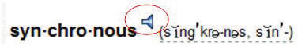
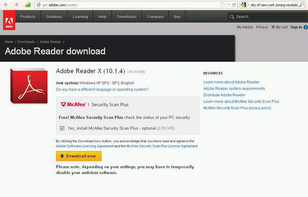
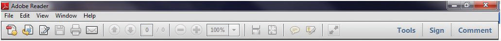

This chapter provides an overview of project management, defining both projects and project management and exploring the difference between project management and operations management. Advances in technology are driving the speed of innovation and the ability of organizations to shorten the time needed to develop and deliver new products and services that increase an organization’s competitive advantage. This drive to develop new and unique products or services creates a perfect environment for the application of project management methodologies and skills. We also provide a brief overview of the knowledge areas of project management and the skills needed to be a successful project manager.
“Project management is the application of knowledge, skills, tools, and techniques to project activities to meet the project requirements.”Project Management Institute, Inc., A Guide to the Project Management Body of Knowledge (PMBOK Guide), 4th ed. (Newtown Square, PA: Project Management Institute, Inc., 2008), 6. This simple definition represents a compromise that resulted from intense discussions within the Project Management Institute (PMI)Organization of professional project managers that publishes A Guide to the Project Management Body of Knowledge (PMBOK Guide). during the 1980s. One of the priorities of PMI during this time was the development of project management as a profession. Although debate continues on whether project management is a profession with an enforceable code of conduct and other traditional criteria for recognition as a profession, the development of A Guide to the Project Management Body of Knowledge (PMBOK Guide) and the project management certifications that derived from these efforts helped promote the understanding and development of the project management field.
The discussion about what should be in the definition of project management included debates about the purpose of project management. Is the main purpose to meet client expectations or is the main purpose to meet the written specifications and requirements? This discussion around meeting project requirements was not easily settled. If it is assumed that the project client is the one who defines project requirements, then maybe project management is the application of knowledge, skills, tools, and techniques to meet client requirements or client expectations. PMI’s definition of project management does provide a good understanding of project management, but it does not help us understand project success. For that, we must include the client.
Jack Meredith and Samuel MantelJack R. Meredith and Samuel J. Mantel, Jr., Project Management: A Managerial Approach (Hoboken, NJ: Wiley, 2006), 8. discussed project management in terms of producing project outcomes within the three objectives of cost, schedule, and specifications. Project managers are then expected to develop and execute a project plan that meets cost, schedule, and specification parameters. According to this view, project management is the application of everything a project manager does to meet these parameters. This approach to defining project management shares PMI’s focus on the project outcomes in terms of requirements.
Meredith and Mantel added a fourth aspect of project management—the expectations of the client. One client-centered definition of project management is the application of knowledge, skills, tools, and techniques to meet or exceed the expectations of the client. This definition focuses on delivering a product or service to the client that meets expectations rather than project specifications. It is possible to meet all project specifications and not meet client expectations or fail to meet one or more specifications and still meet or exceed a client’s expectation.Russell W. Darnall, The World’s Greatest Project (Newtown Square, PA: Project Management Institute, Inc., 1996), 48–54.
Meredith and Mantel discussed a tendency noted by DarnallRussell W. Darnall, The World’s Greatest Project (Newtown Square, PA: Project Management Institute, Inc., 1996), 48–54. that expectations often increase during the life of a project. Meredith and Mantel suggest that this is a form of scope increase. A project scopeDocument that reflects the performance specifications of the project deliverables. See scope of work (SOW). is a carefully crafted document that reflects the performance specifications of the project deliverables. Defining the project scope and managing scope change is a very different process from developing an understanding of a client’s expectations and managing those expectations. Darnall focused on defining and managing client expectations as a critical project management skill that is distinct from scope development and management.
Client expectations encompass an emotional component that includes many client desires that are not easily captured within a specification document. Although closely correlated with project specifications, client expectations are driven by different needs. It is possible for a project team to exceed every project specification and end up with an unsatisfied client.
The Department of Highways in South Carolina was exploring ways to reduce the road construction costs and developed new contracting processes to allow the road builders to bring new ideas for cutting costs. On one project, the contractor proposed cost-cutting ideas throughout the life of the project. At each phase, the client accepted many of the ideas and then revised the budget. The client promoted the revised cost target of the project as an example of the success of the new process. By the end of the project, the final cost was less than 1 percent over the newest target. Although the total cost of the project was almost 10 percent less than the original cost projections and contract obligations, the success of the project was connected to the new expectations that developed during the life of the project. Even though this project performance exceeded the original goal, the client was disappointed.
The reverse is also true. A project can be late and over budget and the client can be satisfied. Although this may be counterintuitive, the response of a client to the events of a project is complex and goes beyond the data related in project specifications.
A biotechnology company developed a new drug that proved to have a large market demand, and the team that developed the drug was assigned to build a new manufacturing facility to produce the drug. The project manager for the construction company that was awarded the contract to build the manufacturing facility managed the project effectively. Every request for a change in scope was approved, and the result was a 20 percent increase to the total cost of the project. On most projects, a 20 percent increase in the project cost would be considered poor performance. For the client’s project team, who were accustomed to complex projects with a large number of unknown issues that increase the final cost of the project, a 20 percent overrun in cost was not unusual. Even though the project was 20 percent over budget, the client was happy. Client satisfaction is often tied to expectations about project performance. Identifying and managing those expectations is a primary responsibility of the project manager.
Client Expectations
Compare and contrast the highway and biotech examples previously described. Suggest an approach that might have prevented client disappointment in the highway project. Include the following in your answer:
The Project Management Institute (PMI) defines a projectA temporary activity undertaken to create a product, service, or result that is unique. by its two key characteristics. All projects are temporary and undertaken to create a product, service, or result that is unique.Project Management Institute, Inc., A Guide to the Project Management Body of Knowledge (PMBOK Guide), 4th ed. (Newtown Square, PA: Project Management Institute, Inc., 2008), 5. These two simple concepts create a work environment that mandates different management approach from that used by an operations manager, whose work is oriented toward continuous improvement of existing processes over longer periods of time. A project manager needs a different set of skills to both define and successfully execute temporary projects. Because projects are temporary, they have a defined beginning and end. Project managers must manage start-up activities and project closeout activities. The processes for developing teams, organizing work, and establishing priorities require a different set of knowledge and skills because members of the project management team recognize that it is temporary. They seldom report directly to the project manager and the effect of success or failure of the project might not affect their reputations or careers the same way that the success or failure of one of their other job responsibilities would.
The second characteristic of a project, the delivery of a unique product, service, or result, also changes the management approach to the work. A project manager must take time to understand the deliverables of a project, develop a plan for producing the deliverables in the time available, and then execute that plan.
Projects are also defined within the context of larger projects as the following example illustrates.
The National Energy Technology Laboratory laid out a plan for a national energy policy that had a clear and identifiable outcome—providing reliable, affordable, and environmentally sound energy.National Energy Technology Laboratory, “Reliable, Affordable, and Environmentally Sound Energy for America’s Future,” The Energy Lab, 2001, http://www.netl.doe.gov/publications/press/2001/nep/nep.html (accessed June 18, 2009). The details of this plan will be revised and updated, but the general goals are likely to remain unchanged. To accomplish these goals, the project requires the development of new technologies, complex scheduling and cost control, coordination of a large number of subcontractors, and skillful stakeholder management. Development of each of the major components became a project for the winning contractors within the larger project of providing reliable, affordable, and environmentally sound energy. Contractors for cleaner use of fossil fuels, conservation efforts, and development of renewable energy sources would manage major projects. Each project has to develop new technologies, manage a large number of subcontractors, and manage the stakeholders at the Department of Energy.
Each subcontractor or work unit becomes a project for that organization. The project is defined by the scope of work. In the energy policy, the scope of work included all activities associated with reducing use of fossil fuels and reliance on imported energy. Using our definition that a project is a temporary endeavor that creates a unique product or service, implementation of the energy policy would be a project that consists of other projects, such as development of the following:
Projects within Projects
Choose a large public works project such as the construction of a new high school. Identify at least five phases to this project that could be treated as projects within a project. Specifically state how each project meets the definition of a project, and describe the product, service, or result of each project and why it is temporary.
The project is affected by the type of organization in which the project is conducted and how the organization is organized to manage projects.
Organizations fulfill a societal role to meet economic, religious, and governance functions. Local factories, churches, and hospitals are all organizations that provide some social or community need. Factories create wealth and jobs, churches provide spiritual and common social needs for communities, and government organizations provide regulations and services that allow for an orderly society. These organizations have different views of time and each organization develops an operational approach to accomplishing the purpose of the organization over that time horizon. For example, a religious group might begin construction of a cathedral that would take several lifetimes to complete, government performance is reviewed at election time, and a publicly owned company must justify its use of money each year in the annual report.
Organizations operate to effectively and efficiently produce the product or service that achieves the organization’s purpose and goals as defined by the key stakeholdersOne who has a share or interest in a project.—those who have a share or interest. An organization seeks to develop stable and predictable work processes and then improve those work processes over time through increased quality, reduced costs, and shorter delivery times. Total quality management, lean manufacturing, and several other management philosophies and methodologies have focused on providing the tools and processes for increasing the effectiveness and efficiency of the organization. Historically, these methodologies focused on creating incremental and continuous improvement in work processes. More recently, organizations are increasingly focused on step changesSignificant rather than incremental improvements in effectiveness or efficiency that take advantage of new technologies. that take advantage of new technologies to create a significant improvement in the effectiveness or efficiency of the organization.
Often, these initiatives to increase organizational effectiveness or efficiency are identified as projects. Economic organizations will initiate a project to produce a new product, to introduce or revamp work processes to significantly reduce product costs, or to merge with other organizations to reduce competition or lower costs and generate additional profits. A social organization, such as a hospital, may build a new wing, introduce a new service, or design new work processes to reduce costs. A government organization may introduce a new software program that handles public records more efficiently, build a new road to reduce congestion, or combine departments to reduce costs.
Each of the initiatives meets our definition of a project. Each is a temporary endeavor and produces a unique product or service. Managing these projects effectively entails applying project management knowledge, skills, and tools.
One way to improve understanding of project management is to contrast project management with operations management. Whether in an economic, socioreligious, or government organization, managers are charged with effectively and efficiently achieving the purpose of the organization. Typically, a manager of an economic organization focuses on maximizing profits and stockholder value. Leaders with socioreligious organizations focus on effective and efficient delivery of a service to a community or constituency, and governmental managers are focused on meeting goals established by governmental leaders.
Operations managers focus on the work processes of the operation. More effective work processes will produce a better product or service, and a more efficient work process will reduce costs. Operations managers analyze work processes and explore opportunities to make improvements. Total quality management, continuous process improvement, lean manufacturing, and other aspects of the quality movement provide tools and techniques for examining organizational culture and work processes to create a more effective and efficient organization. Operations managers are process focused, oriented toward capturing and standardizing improvement to work processes and creating an organizational culture focused on the long-term goals of the organization.
Project managers focus on the goals of the project. Project success is connected to achieving the project goals within the project timeline. Project managers are goal directed and time sensitive. Project managers apply project management tools and techniques to clearly define the project goals, develop an execution plan to meet those goals, and meet the milestones and end date of the project.
An operations manager may invest $10,000 to improve a work process that saves $3,000 a year. Over a five-year period, the operations manager improved the profitability of the operations by $5,000 and will continue to save $3,000 every year. The project manager of a one-year project could not generate the savings to justify this kind of process improvement and would not invest resources to explore this type of savings.
An operations manager creates a culture to focus on the long-term health of the organization. Operations managers build teams over time that focus on standardizing and improving work processes, that search for and nurture team members who will “fit in,” and that contribute to both the effectiveness of the team and the team culture. Project managers create a team that is goal focused and energized around the success of the project. Project team members know that the project assignment is temporary because the project, by definition, is temporary. Project team members are often members of organizational teams that have a larger potential to affect long-term advancement potential. Project managers create clear goals and clear expectations for team members and tie project success to the overall success of the organization. Operations managers are long-term focused and process oriented. Project managers are goal directed and milestone oriented.
Because project management is different from operations management, projects are handled best by people who are trained in project management. This expertise can be obtained by hiring an outside consulting firm that specializes in project management or by developing an in-house group.
Some organizations are designed to execute projects. Often entities contract with engineering and construction companies to design and build their facilities or hire software companies to develop a software solution. The major work processes within these organizations are designed to support the acquisition and execution of projects. Functional departments such as estimating, scheduling, and procurement create and maintain core competencies designed to support projects. The ability of these types of organizations to successfully manage projects becomes a competitive advantage in the marketplace.
Organizations designed to produce products or services also use projects. Major activities outside the normal work of the organization’s department or functional units or major activities that cross functional boundaries become a project (a temporary task undertaken to create a product or service that is unique). As economic pressures increase the speed in which organizations must change and adapt to new environmental conditions, leaders are increasingly chartering projects to enable the organization to more quickly adapt. The application of a project management approach increases the likelihood of success as organizations charter a project to facilitate organizational change, to increase the development and introduction of new products or support the merger or divesture of organizational units.
Project management offices (PMOs)Group within an organization that manages the organization’s projects. have emerged to facilitate development of organizational knowledge, skills, and tools to internally charter and manage projects within the organization. The PMO varies in structure and responsibility depending on the project management approach of the parent organization. On one end of the spectrum, the PMO has complete responsibility for projects within an organization from the criteria and selection of appropriate projects to accountability for project performance. In organizations that make a large investment in the PMO, a large number of new product or process improvement projects are submitted, and the project office develops a portfolio of projects to manage over a given period that maximizes the use of organizational resources and provides the greatest return to the organization.
PMOs can provide various functions for an organization. Some possible functions include the following:
Operations versus Project Management
The manager of a sales department must meet annual sales goals, manage personnel in the department, and develop and deliver product training for clients. How is this type of operations management different from project management? Address each of the following issues in your answer:
Every project is unique, and most projects will encounter unexpected technical challenges. Each project management team is a group of individuals who need motivation and coordination. Planning is vital, but the ability to adapt to changes and work with people to overcome challenges is just as necessary. A project manager must master the skills that are necessary to be successful in this environment.
Often the difference between the project that succeeds and the project that fails is the leadership of the project manager. The leadership skills needed by the successful project manager include all the skills needed by operations managers of organizations. These skills include:
Because project managers generally operate in a project environment that is more time sensitive and goal driven, the successful project manager requires additional knowledge, skills, and abilities.
Albert EinsiedelAlbert A. Einsiedel, “Profile of Effective Project Managers,” Project Management Journal 18 (1987): 5. discussed leader-sensitive projects and defined five characteristics of an effective project leader. These characteristics were chosen based on some assumptions about projects. These characteristics include the project environment, which is often a matrix organization that results in role ambiguity, role conflict, and role erosion. The project environment is often a fluid environment where decisions are made with little information. In this environment, the five characteristics of an effective project leader include the following:
Hans ThamhainHans J. Thamhain, “Developing Project Management Skills,” Project Management Journal 22 (1991): 3. researched the training of project managers and, based on the finding, categorized project management into interpersonal, technical, and administrative skills:
Thamhain’s work provides a taxonomy for better understanding the skills needed by project managers.
Traditionally, the project manager has been trained in skills such as developing and managing the project scope, estimating, scheduling, decision making, and team building. Although the level of skills needed by the project manager depends largely on the project profile, increasingly the people skills of the project manager are becoming more important. The skills to build a high-performing team, manage client expectations, and develop a clear vision of project success are the type of skills needed by project managers on more complex projects. “To say Joe is a good project manager except he lacks good people skills is like saying he’s a good electrical engineer but doesn’t really understand electricity.”Russell W. Darnall, “The Emerging Role of the Project Manager,” PMI Journal (1997): 64.
Personal Leadership Inventory
Rate your personal project management skills using the following scale:
Operational management skills:
Additional project management skills:
Projects are divided into components, and a project manager must be knowledgeable in each area. Each of these areas of knowledge will be explored in more depth in subsequent chapters.
The start-up of a project is similar to the start-up of a new organization. The project leader develops the project infrastructure used to design and execute the project. The project management team must develop alignment among the major stakeholders—those who have a share or interest—on the project during the early phases or definition phases of the project. The project manager will conduct one or more kickoff meetings or alignment sessions to bring the various parties of the project together and begin the project team building required to operate efficiently during the project.
During project start-up, the project management team refines the scope of work and develops a preliminary schedule and conceptual budget. The project team builds a plan for executing the project based on the project profile. The plan for developing and tracking the detailed schedule, the procurement plan, and the plan for building the budget and estimating and tracking costs are developed during the start-up. The plans for information technology, communication, and tracking client satisfaction are all developed during the start-up phase of the project.
Flowcharts, diagrams, and responsibility matrices are tools to capture the work processes associated with executing the project plan. The first draft of the project procedures manual captures the historic and intuitional knowledge that team members bring to the project. The development and review of these procedures and work processes contribute to the development of the organizational structure of the project.
This is typically an exciting time on a project where all things are possible. The project management team is working many hours developing the initial plan, staffing the project, and building relationships with the client. The project manager sets the tone of the project and sets expectations for each of the project team members. The project start-up phase on complex projects can be chaotic, and until plans are developed, the project manager becomes the source of information and direction. The project manager creates an environment that encourages team members to fully engage in the project and encourages innovative approaches to developing the project plan.
The project scope is a document that defines the parametersFactors that define a system and determine its behavior.—factors that define a system and determine its behavior—of the project, what work is done within the boundaries of the project, and the work that is outside the project boundaries. The scope of work (SOW)Document that defines what work will be accomplished by the end of the project. is typically a written document that defines what work will be accomplished by the end of the project—the deliverables of the project. The project scope defines what will be done, and the project execution planDefines how the work will be accomplished. defines how the work will be accomplished.
No template works for all projects. Some projects have a very detailed scope of work, and some have a short summary document. The quality of the scope is measured by the ability of the project manager and project stakeholders to develop and maintain a common understanding of what products or services the project will deliver. The size and detail of the project scope is related to the complexity profile of the project. A more complex project often requires a more detailed and comprehensive scope document.
According to the Project Management Institute,Project Management Institute, Inc., A Guide to the Project Management Body of Knowledge (PMBOK Guide), 4th ed. (Newtown Square, PA: Project Management Institute, Inc., 2008), 115–16. the scope statement should include the following:
The scope document is the basis for agreement by all parties. A clear project scope document is also critical to managing change on a project. Since the project scope reflects what work will be accomplished on the project, any change in expectations that is not captured and documented creates the opportunity for confusion. One of the most common trends on projects is the incremental expansion in the project scope. This trend is labeled scope creepIncremental expansion in the project scope without formal approval.. Scope creep threatens the success of a project because the small increases in scope require additional resources that were not in the plan. Increasing the scope of the project is a common occurrence, and adjustments are made to the project budget and schedule to account for these changes. Scope creep occurs when these changes are not recognized or not managed. The ability of a project manager to identify potential changes is often related to the quality of the scope documents.
Events do occur that require the scope of the project to change. Changes in the marketplace may require change in a product design or the timing of the product delivery. Changes in the client’s management team or the financial health of the client may also result in changes in the project scope. Changes in the project schedule, budget, or product quality will have an effect on the project plan. Generally, the later in the project the change occurs, the greater the increase to the project costs. Establishing a change management system for the project that captures changes to the project scope and assures that these changes are authorized by the appropriate level of management in the client’s organization is the responsibility of the project manager. The project manager also analyzes the cost and schedule impact of these changes and adjusts the project plan to reflect the changes authorized by the client. Changes to the scope can cause costs to increase or decrease.
The definition of project success often includes completing the project on time. The development and management of a project schedule that will complete the project on time is a primary responsibility of the project manager, and completing the project on time requires the development of a realistic plan and the effective management of the plan. On smaller projects, project managers may lead the development of the project plan and build a schedule to meet that plan. On larger and more complex projects, a project controls team that focuses on both costs and schedule planning and controlling functions will assist the project management team in developing the plan and tracking progress against the plan.
To develop the project schedule, the project team does an analysis of the project scope, contract, and other information that helps the team define the project deliverables. Based on this information, the project team develops a milestone scheduleEstablishes key dates throughout the life of a project that must be met for the project to finish on time.. The milestone schedule establishes key dates throughout the life of a project that must be met for the project to finish on time. The key dates are often established to meet contractual obligations or established intervals that will reflect appropriate progress for the project. For less complex projects, a milestone schedule may be sufficient for tracking the progress of the project. For more complex projects, a more detailed schedule is required.
To develop a more detailed schedule, the project team first develops a work breakdown structure (WBS)Layered description of the work with increasing detail in each layer.—a description of tasks arranged in layers of detail. Although the project scope is the primary document for developing the WBS, the WBS incorporates all project deliverables and reflects any documents or information that clarifies the project deliverables. From the WBS, a project plan is developed. The project plan lists the activities that are needed to accomplish the work identified in the WBS. The more detailed the WBS, the more activities that are identified to accomplish the work.
After the project team identifies the activities, the team then sequences the activities according to the order in which the activities are to be accomplished. An outcome from the work process is the project logic diagramA graphic with boxes that represent tasks and their durations with connecting arrows to indicate their sequence relationships with other tasks.. The logic diagram represents the logical sequence of the activities needed to complete the project. The next step in the planning process is to develop an estimation of the time it will take to accomplish each activity or the activity duration. Some activities must be done sequentially, and some activities can be done concurrently. The planning process creates a project schedule by scheduling activities in a way that effectively and efficiently uses project resources and completes the project in the shortest time.
On larger projects, several paths are created that represent a sequence of activities from the beginning to the end of the project. The longest path to the completion of the project is the critical pathSequence of activities through the network that results in the latest completion date of the project.. If the critical path takes less time than is allowed by the client to complete the project, the project has a positive total floatAmount of time an activity can be delayed from an early start without delaying the completion date. or project slackDifference between the estimated time and project completion date (see float).. If the client’s project completion date precedes the calculated critical path end date, the project has a negative float. Understanding and managing activities on the critical path is an important project management skill.
To successfully manage a project, the project manager must also know how to accelerate a schedule to compensate for unanticipated events that delay critical activities. Compressing—crashingAccelerating the project schedule.—the schedule is a term used to describe the techniques used to shorten the project schedule. During the life of the project, scheduling conflicts often occur, and the project manager is responsible for reducing these conflicts while maintaining project quality and meeting cost goals.
The definition of project success often includes completing the project within budget. Developing and controlling a project budget that will accomplish the project objectives is a critical project management skill. Although clients expect the project to be executed efficiently, cost pressures vary on projects. On some projects, the project completion or end date is the largest contributor to the project complexity. The development of a new drug to address a critical health issue, the production of a new product that will generate critical cash flow for a company, and the competitive advantage for a company to be first in the marketplace with a new technology are examples of projects with schedule pressures that override project costs.
The accuracy of the project budget is related to the amount of information known by the project team. In the early stages of the project, the amount of information needed to develop a detailed budget is often missing. To address the lack of information, the project team develops different levels of project budget estimates. The conceptual estimateInitial cost estimate made with partial knowledge. Also called a ballpark estimate. (or “ballpark estimate”) is developed with the least amount of knowledge. The major input into the conceptual estimate is expert knowledge or past experience. A project manager who has executed a similar project in the past can use those costs to estimate the costs of the current project.
When more information is known, the project team can develop a rough order of magnitude (ROM)Cost estimate based on partial knowledge and past experience that is usually more accurate than the initial conceptual estimate. estimate. Additional information such as the approximate square feet of a building, the production capacity of a plant, and the approximate number of hours needed to develop a software program can provide a basis for providing a ROM estimate. After a project design is more complete, a project detailed estimate can be developed. When the project team knows the number of rooms, the type of materials, and the building location of a home, the project team can provide a detailed estimate. A detailed estimate is not a bid.
The cost of the project is tracked relative to the progress of the work and the estimate for accomplishing that work. Based on the cost estimate, the cost of the work performed is compared against the cost budgeted for that work. If the cost is significantly higher or lower, the project team explores reasons for the difference between expected costs and actual costs.
Project costs may deviate from the budget because the prices in the marketplace were different from what was expected. For example, the estimated costs for lumber on a housing project may be higher than budgeted or the hourly cost for labor may be lower than budgeted. Project costs may also deviate based on project performance. For example, the project team estimated that the steel design for a bridge over the Hudson River would take 800 labor hours, but 846 hours were actually expended. The project team captures the deviation between costs budgeted for work and the actual cost for work, revises the estimate as needed, and takes corrective action if the deviation appears to reflect a trend.
The project manager is responsible for assuring that the project team develops cost estimates based on the best information available and revises those estimates as new or better information becomes available. The project manager is also responsible for tracking costs against the budget and conducting an analysis when project costs deviate significantly from the project estimate. The project manager then takes appropriate corrective action to assure that project performance matches the revised project plan.
Project quality focuses on the end product or service deliverables that reflect the purpose of the project. The project manager is responsible for developing a project execution approach that provides for a clear understanding of the expected project deliverables and the quality specifications. The project manager of a housing construction project not only needs to understand which rooms in the house will be carpeted but also what grade of carpet is needed. A room with a high volume of traffic will need a high-grade carpet.
The project manager is responsible for developing a project quality plan that defines the quality expectations and assures that the specifications and expectations are met. Developing a good understanding of the project deliverables through documenting specifications and expectations is critical to a good quality plan. The processes for assuring that the specifications and expectations are met are integrated into the project execution plan. Just as the project budget and completion dates may change over the life of a project, the project specifications may also change. Changes in quality specifications are typically managed in the same process as cost or schedule changes. The impact of the changes is analyzed for impact on cost and schedule, and with appropriate approvals, changes are made to the project execution plan.
The Project Management Institute’s A Guide to the Project Management Body of Knowledge (PMBOK Guide) has an extensive chapter on project quality management. The material found in this chapter would be similar to material found in a good operational management text. Although any of the quality management techniques designed to make incremental improvement to work processes can be applied to a project work process, the character of a project (unique and relatively short in duration) makes small improvements less attractive on projects.
Rework on projects, as with manufacturing operations, increases the cost of the product or service and often increases the time needed to complete the reworked activities. Because of the duration constraints of a project, the development of the appropriate skills, materials, and work process early in the project is critical to project success. On more complex projects, time is allocated to developing a plan to understand and develop the appropriate levels of skills and work processes.
Project management organizations that execute several similar types of projects may find the process improvement tools useful in identifying and improving the baseline processes used on their projects. Process improvement tools may also be helpful in identifying cost and schedule improvement opportunities. Opportunities for improvement must be found quickly to influence project performance. The investment in time and resources to find improvements is greatest during the early stages of the project, when the project is in the planning stages. During later project stages, as pressures to meet project schedule goals increase, the culture of the project is less conducive to making changes in work processes.
Another opportunity for applying process improvement tools is on projects that have repetitive processes. A housing contractor that is building several identical houses may benefit from evaluating work processes in the first few houses to explore the opportunities available to improve the work processes. The investment of $1,000 in a work process that saves $200 per house is a good investment as long as the contractor is building more than five houses.
Staffing the project with the right skills, at the right place, and at the right time is an important responsibility of the project management team. The project usually has two types of team members: functional managers and process managers. The functional managers and team focus on the technology of the project. On a construction project, the functional managers would include the engineering manager and construction superintendents. On a training project, the functional manager would include the professional trainers; on an information technology project, the software development managers would be functional managers. The project management team also includes project process managers. The project controls team would include process managers who have expertise in estimating, cost tracking, planning, and scheduling. The project manager needs functional and process expertise to plan and execute a successful project.
Because projects are temporary, the staffing plan for a project typically reflects both the long-term goals of skilled team members needed for the project and short-term commitment that reflects the nature of the project. Exact start and end dates for team members are often negotiated to best meet the needs of individuals and the project. The staffing plan is also determined by the different phases of the project. Team members needed in the early or conceptual phases of the project are often not needed during the later phases or project closeout phases. Team members needed during the execution phase are often not needed during the conceptual or closeout phases. Each phase has staffing requirements, and the staffing of a complex project requires detailed planning to have the right skills, at the right place, at the right time.
Typically a core project management team is dedicated to the project from start-up to closeout. This core team would include members of the project management team: project manager, project controls, project procurement, and key members of the function management or experts in the technology of the project. Although longer projects may experience more team turnover than shorter projects, it is important on all projects to have team members who can provide continuity through the project phases.
For example, on a large commercial building project, the civil engineering team that designs the site work where the building will be constructed would make their largest contribution during the early phases of the design. The civil engineering leadLeader of a group. would bring on different civil engineering specialties as they were needed. As the civil engineering work is completed and the structural engineering is well under way, a large portion of the civil engineers would be released from the project. The functional managers, the engineering manager, and civil engineering lead would provide expertise during the entire length of the project, addressing technical questions that may arise and addressing change requests.
Project team members can be assigned to the project from a number of different sources. The organization that charters the project can assign talented managers and staff from functional units within the organization, contract with individuals or agencies to staff positions on the project, temporarily hire staff for the project, or use any combination of these staffing options. This staffing approach allows the project manager to create the project organizational culture. Some project cultures are more structured and detail oriented, and some are less structured with less formal roles and communication requirements. The type of culture the project manager creates depends greatly on the type of project.
Completing a complex project successfully requires teamwork, and teamwork requires good communication among team members. If those team members work in the same building, they can arrange regular meetings, simply stop by each other’s office space to get a quick answer, or even discuss a project informally at other office functions. Many complex projects in today’s global economy involve team members from widely separated locations, and the types of meetings that work within the same building are not possible. Teams that use electronic methods of communicating without face-to-face meetings are called virtual teamsGroup that uses electronic methods of communicating without face-to-face meetings..
Communicating can be divided into two categories: synchronousCommunication between parties at the same time. and asynchronousNot synchronous; communication between parties does not take place at the same time.. If all the parties to the communication are taking part in the exchange at the same time, the communication is synchronous. A telephone conference call is an example of synchronous communication. When the participants are not interacting at the same time, the communication is asynchronous. The letter a at the beginning of the word means not. Communications technologies require a variety of compatible devices, software, and service providers, and communication with a global virtual team can involve many different time zones. Establishing effective communications requires a communications plan.
Risk exists on all projects. The role of the project management team is to understand the kinds and levels of risks on the project and then to develop and implement plans to mitigate these risks. Risk represents the likelihood that an event will happen during the life of the project that will negatively affect the achievement of project goals. The type and amount of risk varies by industry type, complexity, and phase of the project. The project risk plan will also reflect the risk profile of the project manager and key stakeholders. People have different comfort levels with risk, and some members of the project team will be more risk adverse than others.
The first step in developing a risk management plan involves identifying potential project risks. Some risks are easy to identify, such as the potential for a damaging storm in the Caribbean, and some are less obvious. Many industries or companies have risk checklists developed from past experience. The Construction Industry Institute published a one-hundred-item risk checklistConstruction Industry Institute Cost/Schedule Task Force, Management of Project Risks and Uncertainties (Austin, TX: Construction Industry Institute, 1989). that provides examples and areas of project risks. No risk checklist will include all potential risks. The value of a checklist is the stimulation of discussion and thought about the potential risks on a project.
The project team then analyzes the identified risks and estimates the likelihood of the risks occurring. The team then estimates the potential impact of project goals if the event does occur. The outcome from this process is a prioritized list of estimated project risks with a value that represents the likelihood of occurrence and the potential impact on the project.
The project team then develops a risk mitigation plan that reduces the likelihood of an event occurring or reduces the impact on the project if the event does occur. The risk management plan is integrated into the project execution plan, and mitigation activities are assigned to the appropriate project team member. The likelihood that all the potential events identified in the risk analysis would occur is extremely rare. The likelihood that one or more events will happen is high.
The project risk plan reflects the risk profile of the project and balances the investment of the mitigation against the benefit for the project. One of the more common risk mitigation approaches is the use of contingency. Contingency is funds set aside by the project team to address unforeseen events. Projects with a high-risk profile will typically have a large contingency budget. If the team knows which activities have the highest risk, contingency can be allocated to activities with the highest risk. When risks are less identifiable to specific activities, contingency is identified in a separate line item. The plan includes periodic risk plan reviews during the life of the project. The risk review evaluates the effectiveness of the current plan and explores for possible risks not identified in earlier sessions.
The procurement effort on projects varies widely and depends on the type of project. Often the client organization will provide procurement services on less complex projects. In this case, the project team identifies the materials, equipment, and supplies needed by the project and provides product specifications and a detailed delivery schedule. When the procurement department of the parent organization provides procurement services, a liaison from the project can help the procurement team better understand the unique requirements of the project and the time-sensitive or critical items of the project schedule.
On larger, more complex projects, personnel are dedicated to procuring and managing the equipment, supplies, and materials needed by the project. Because of the temporary nature of projects, equipment, supplies, and materials are procured as part of the product of the project or for the execution of the project. For example, the bricks procured for a construction project would be procured for the product of the project, and the mortar mixer would be equipment procured for the execution of the project work. At the end of the project, equipment bought or rented for the execution of the work of the project are sold, returned to rental organizations, or disposed of some other way.
More complex projects will typically procure through different procurement and management methods. CommoditiesItems that can be bought off the shelf with no special modification for the project. are common products that are purchased based on the lowest bid. Commodities include items like concrete for building projects, office supplies, or even lab equipment for a research project. The second type of procurement includes products that are specified for the project. VendorsCompany that designs goods or services to meet specified needs. who can produce these products bid for a contract. The awarding of a contract can include price, ability to meet the project schedule, the fit for purpose of the product, and other considerations important to the project. Manufacturing a furnace for a new steel mill would be provided by a project vendor. Equipment especially designed and built for a research project is another example. These vendors’ performances become important parts of the project, and the project manager assigns resources to coordinate the work and schedule of the vendor. The third procurement approach is the development of one or more partners. A design firm that is awarded the design contract for a major part of the steel mill and a research firm that is conducting critical subparts of the research are examples of potential project partners. A partner contributes to and is integrated into the execution plan. Partners perform best when they share the project vision of success and are emotionally invested in the project. The project management team builds and implements a project procurement plan that recognizes the most efficient and effective procurement approach to support the project schedule and goals.
Areas of Knowledge
Write one or two sentences in which you describe each area of project management knowledge—as defined by the Project Management Institute.
Exercises at the end of the chapter are designed to strengthen your understanding and retention of the information recently acquired in the chapter.
Write several paragraphs to provide more in-depth analysis and consideration when answering the following questions.
The exercises in this section are designed to promote exchange of information among students in the classroom or in an online discussion. The exercises are more open ended, which means that what you find might be completely different from what your classmates find, and you can all benefit by sharing what you have learned.
One of the problems with learning a new vocabulary in an online class is that you do not get to hear the instructor pronounce the terms. If the pronunciation is not obvious from the spelling, it can be embarrassing if you say the word incorrectly. Fortunately, several online dictionaries have features that say the word. You must have speakers or headphones attached to the computer, and they must be enabled.
Obtain speakers or headphones and plug them into the audio output jack on your computer. The location of this jack on computers varies greatly, but it is usually green as shown in Figure 1.10 "Audio Output Ports on Three Computers".
Figure 1.10 Audio Output Ports on Three Computers
The term is displayed with a phonetic spelling and a speaker icon, as shown in Figure 1.11 "Pronunciation Option in an Online Dictionary".
Figure 1.11 Pronunciation Option in an Online Dictionary
Source: www.thefreedictionary.com.
Review your work and use the following rubric to determine its adequacy:
| Element | Best | Adequate | Poor |
|---|---|---|---|
| File name | N/A | ||
| Used an online audio aid to learn to pronounce terms correctly | Used a browser to open an online dictionary that has an audio feature for pronouncing terms that is indicated by an icon | Same as Best | Choice of a website that does not include audio pronunciations or has an inability to activate the audio output |
There are many programs that are useful for project managers that can be downloaded from a website. Some of them are free while others are trial versions or are available for a license fee. To download and install software on a computer, you must have administrative rights on that computer. If you are trying to use a computer at a company for your homework in this class, you probably do not have administrative rights to install software. You need to use a private computer on which you can log in as the administrator or as a user with rights to install software.
Alternatively, in some campus computer labs you are allowed to install software, but the computer is refreshed to its original configuration when the machine is restarted. If you use a computer in a common lab, be sure to complete the assignment before the machine is restarted.
In this exercise, you download and install Adobe Reader. This program allows you to read files that are saved in the PDF format. This format is very popular because it allows distribution of documents that may be easily viewed but not changed.
Using a web browser, go to http://www.adobe.com/reader. The Adobe home page displays as shown in Figure 1.12 "Adobe Reader Download Page".
Figure 1.12 Adobe Reader Download Page
Source: Adobe product screenshot reprinted with permission from Adobe Systems Incorporated.
From the list of programs on your computer start Adobe Reader to confirm that it is successfully installed, as shown in Figure 1.13 "Adobe Reader Installed".
Figure 1.13 Adobe Reader Installed
Source: Adobe product screenshot reprinted with permission from Adobe Systems Incorporated.
Review your work and use the following rubric to determine its adequacy:
| Element | Best | Adequate | Poor |
|---|---|---|---|
| File name | N/A | ||
| Downloaded software from an Internet site and installed it on a computer | Program is installed and functioning | Same as Best | Did not allow time to find a computer on which software could be installed; process failed |
There are many programs that are useful for project managers that can be downloaded from a website. Some of them are free while others are trial versions or are available for a license fee. To download and install software on a computer, you must have administrative rights on that computer. If you are trying to use a computer at a company for your homework in this class, you probably do not have administrative rights to install software. You need to use a private computer on which you can log in as the administrator or as a user with rights to install software.
Alternatively, in some campus computer labs you are allowed to install software, but the computer is refreshed to its original configuration when the machine is restarted. If you use a computer in a common lab, be sure to complete the assignment before the machine is restarted.
In this exercise, you download and install Google Earth. This program provides information that would be valuable to a project manager who needs to consider the implications of the location of a project.
Using a web browser, go to http://earth.google.com. The Google Earth home page displays as shown in Figure 1.14 "Google Earth Home Page".
Scroll through and review the Terms of Service. See Figure 1.15 "Terms of Service".
Choose a folder into which the file will be downloaded. The default choice in Windows is usually the Downloads folder in My Documents. Make note of where the file will be placed so you can find it in the next step.
The file that is downloaded is a program that can be executed by clicking the file name. It is an installation program that manages the rest of the download and installation process. In some browsers, the option to click the file name is available from the browser window, and in others, you must use a file management program like Windows Explorer to find the file and then double-click the file name. This process is typical of most programs that you download and install.
Click or double-click the file name to start the installation. A security warning box may display seeking your permission to install a program, as shown in Figure 1.16 "Permission to Run the Installation Program". Only programs from trusted sites should be installed.
Click the Run button. The program will contact the Google Earth website and begin the process of downloading the main part of the program. A window with a progress bar displays to indicate how much of the file has been successfully transferred, as shown in Figure 1.17 "Progress Bar".
When the installation process is complete, the program starts. Any location on earth may be entered, and a satellite image with a variety of accompanying information is displayed, as shown in Figure 1.18 "Google Earth Installed".
Review your work and use the following rubric to determine its adequacy:
| Element | Best | Adequate | Poor |
|---|---|---|---|
| File name | N/A | ||
| Downloaded software from an Internet site and installed it on a computer | Program is installed and functioning | Same as Best | Did not allow time to find a computer on which software could be installed; process failed |
The operating system of your computer manages the display on the monitor or screen. The operating system can make a copy of the screen and save it to disk or to the clipboard—a temporary storage area—and then the image of the screen can be pasted into a word processing document. The document can be saved and then attached to an e-mail or otherwise sent to team members. This skill might be used to illustrate a computer problem, illustrate a point, or prove that you have followed directions properly.
Save the file to a folder of your choice, such as Ch01StudentName, where you use your name without spaces in place of StudentName. Save the file as a Word 97–2003 file type. Your display may show the .doc file extension that is characteristic of the file type if it is set to display file extensions. See Figure 1.19 "File Name in Save As Dialog Box".
In the first line of the document, type Chapter 1 Exercises by StudentName where you replace StudentName with your name. Press the Enter key to move the insertion point to the next line, as shown in Figure 1.20 "Document with Insertion Point on Second Line".
Press the Enter key twice to create a new empty line below the image. See Figure 1.21 "Capture of the Google Maps Screen with Insertion Point below the Image".
Review your work and use the following rubric to determine its adequacy:
| Element | Best | Adequate | Poor |
|---|---|---|---|
| File name | Ch01StudentName in the Word 2003 format where StudentName is replaced by your name | Same as Best | Different file name than specified without the student’s name |
| Download software from an Internet site and install it on a computer | Title; screen capture of the Google Maps site; insertion point below the image | Title plus screen capture; insertion point on same line as image | Missing title |
The operating system of your computer manages the display on the monitor or screen. The operating system can make a copy of the screen and save it to disk or to the clipboard—a temporary storage area—and then the image of the screen can be pasted into a word processing document. The document can be saved and then attached to an e-mail or otherwise sent to team members. This skill might be used to illustrate a computer problem, illustrate a point, or prove that you have followed directions properly.
Review your work and use the following rubric to determine its adequacy:
| Element | Best | Adequate | Poor |
|---|---|---|---|
| File name | Ch01StudentName in the Word 2003 format where StudentName is replaced by your name | Same as Best | Different file name than specified without the student’s name |
| Capture a computer screen and paste it into a word processing document | Title; screen capture of the Google Maps site; insertion point below the image | Title plus screen capture; insertion point on same line as image | Missing title |
The operating system of your computer manages the display on the monitor or screen. The operating system can make a copy of the screen and save it to disk or to the clipboard—a temporary storage area—and then the image of the screen can be pasted into a word processing document. The document can be saved and then attached to an e-mail or otherwise sent to team members. This skill might be used to illustrate a computer problem, illustrate a point, or prove that you have followed directions properly.
Review your work and use the following rubric to determine its adequacy:
| Element | Best | Adequate | Poor |
|---|---|---|---|
| File name | Ch01StudentName in the Word 2003 format where StudentName is replaced by your name | Same as Best | Different file name than specified without the student’s name |
| Capture a computer screen and paste it into a word processing document | Title; screen capture of the Google Maps site; insertion point below the image | Title plus screen capture; insertion point on same line as image | Missing title |
You will visit sites that contain supporting information and useful templates. To save the addresses of these sites, you can create in a folder named Project Management in your web browser.
Open your web browser program. In the address box, type http://maps.google.com and then press Enter. The Google Maps home page displays as shown in Figure 1.22 "Google Maps Home Page".
On your keyboard, at the lower left, locate the Control (CTRL) key. Press and hold the CTRL key, and then on the keyboard press B.In the future, this sequence of holding the Control key and pressing another key will be written with a plus sign (e.g., Ctrl + B). The Bookmark toolbar displays, as shown in Figure 1.23 "Chrome Bookmarks Bar".
On the toolbar above the Bookmarks bar, click the Tools button. On the menu, click Bookmark Manager. The Bookmark Manager dialog box displays, as shown in Figure 1.24 "Chrome Bookmark Manager Dialog Box".
In the New Folder dialog box, in the Name box, type Project Management and then click OK. The Project Management folder is added to the Bookmarks bar as shown in Figure 1.25 "Folder Added to the Bookmarks Bar".
On the toolbar, click the Tools button. On the menu, click Bookmark manager. The Bookmark manager dialog box displays, as shown in Figure 1.26 "Managing Bookmarks".
In the Bookmark Manager dialog box, in the left pane, click the Project Management folder. The link to Google Maps is displayed in the right pane to indicate that it is now in the Project Management folder. The link to Google Maps displays in the pane to the right, as shown in Figure 1.27 "Link Placed in the Project Management Folder".
Start the Chrome browser again. On the Bookmarks bar, click the Project Management folder. The link to Google Maps is displays under the Project Management folder on the Bookmarks bar, as shown in Figure 1.28 "Project Management Folder on the Chrome Bookmarks Bar".
Review your work and use the following rubric to determine its adequacy:
| Element | Best | Adequate | Poor |
|---|---|---|---|
| File name | Ch01StudentName.doc | Same name using .docx format | Does not include student name in file name |
| Create a folder of project management web addresses in a web browser | Folder named Project Management on the Bookmarks toolbar with a working link to Google Maps | Same as Best | Project Management folder without a working link to Google Maps or just a link to Google Maps as one of the Favorites but not in a folder |
You will visit sites that contain supporting information and useful templates. To save the addresses of these sites, you can create a folder named Project Management in your web browser.
Open your web browser program. In the address box, type http://maps.google.com and then press Enter. The Google Maps home page displays as shown in Figure 1.29 "Firefox 3 Browser".
On the toolbar, click the Bookmarks button. The Edit This Bookmark dialog box displaysThis assumes that you have not previously added this site as a bookmark. as shown in Figure 1.30 "Bookmark Dialog Box in Firefox". The default location for the bookmark is the Unsorted Bookmarks.
In the Edit This Bookmark dialog box, click the Done button. The web address for http://maps.google.com is placed in the list of unsorted bookmarks, and the Bookmarks toolbar displays, as shown in Figure 1.31 "Firefox Bookmarks Bar".
On the Menu bar, click Bookmarks. On the menu, click Organize Bookmarks. The Library dialog box displays, as shown in Figure 1.32 "Library of Bookmarks in Firefox".
In the Add Folder dialog box, in the Name box, type Project Management as shown in Figure 1.33 "Folder Added to the Bookmarks Bar".
In the Library dialog box, in the left pane, click Unsorted Bookmarks to show its bookmarks. Locate the link to Google Maps, as shown in Figure 1.34 "Managing Bookmarks".
In the Library dialog box, in the left pane, click the Project Management folder. The link to Google Maps is displayed in the right pane to indicate that it is now in the Project Management folder, as shown in Figure 1.35 "Link Placed in the Project Management Folder".
Start the Firefox browser again. On the Bookmarks bar, click the Project Management folder. The link to Google Maps displays under the Project Management folder on the Bookmarks bar, as shown in Figure 1.36 "Project Management Folder on the Bookmarks Bar".
Review your work and use the following rubric to determine its adequacy:
| Element | Best | Adequate | Poor |
|---|---|---|---|
| File name | N/A | ||
| Create a folder of project management web addresses in a web browser | Folder named Project Management on the Bookmarks toolbar with a working link to Google Maps | Same as Best | Project Management folder without a working link to Google Maps or just a link to Google Maps as one of the Favorites but not in a folder |
You will visit sites that contain supporting information and useful templates. To save the addresses of these sites, you can create a folder named Project Management in your web browser.
Open your web browser program. In the address box, type http://maps.google.com and then press Enter. The Google Maps home page displays as shown in Figure 1.37 "Google Maps Home Page".
On the toolbar, click the Favorites button. The Add to Favorites menu displays as shown in Figure 1.38 "Add to Favorites Menu".
To the right of Add to Favorites, click the arrow.In the future, arrows associated with buttons will be referred to with the button name (e.g., click the Add to Favorites button). On the menu, click Add to Favorites bar. Click outside the menu to close it. The web address for maps.google.com is placed in the Favorites toolbar and the toolbar is displayed, as shown in Figure 1.39 "Internet Explorer Favorites Toolbar".
On the Favorites toolbar, click the Favorites button. On the menu, click the Add to Favorites arrow. On the menu, click Organize Favorites. The Organize Favorites dialog box displays, as shown in Figure 1.40 "Internet Explorer Favorites Dialog Box". Your favorites and folders will be different from those shown.
Type Project Management and then press Enter. The Project Management folder is added at the bottom of the list of favorite links and folders, as shown in Figure 1.41 "Folder Added to the List of Favorites".
Locate the Favorites Bar folder on the list of favorites. Drag the Project Management folder onto the Favorites Bar folder and release the mouse button. The Project Management folder is a subfolder of the Favorites Bar, as shown in Figure 1.42 "Project Management Folder Moved into the Favorites Bar Folder".
Click the Project Management folder. The Google Maps link displays in the Project Management folder, as shown in Figure 1.43 "Google Maps Link in the Project Management Subfolder".
Start the Internet Explorer browser again. On the Favorites toolbar, click the Project Management folder. The link to Google Maps displays under the Project Management folder on the Bookmarks bar, as shown in Figure 1.44 "Project Management Folder on the Internet Explorer Bookmarks Bar".
Review your work and use the following rubric to determine its adequacy:
| Element | Best | Adequate | Poor |
|---|---|---|---|
| File name | Ch01StudentName.doc | .docx format | Student name not in file name |
| Create a folder of project management web addresses in a web browser | Folder named Project Management on the Favorites toolbar with a working link to Google Maps | Same as Best | Project Management folder without a working link to Google Maps or just a link to Google Maps as one of the Favorites but not in a folder |
You will visit sites that contain supporting information and useful templates. To save the addresses of these sites, you can create a folder named Project Management in your web browser.
Open your web browser program. In the address box, type http://maps.google.com and then press Enter. The Google Maps home page displays as shown in Figure 1.45 "Google Maps Home Page".
On the toolbar, click the View Favorites button, and then click the Add to Favorites button. The Add a Favorite dialog box displays as shown in Figure 1.46 "Add a Favorite Dialog Box".
Click the New Folder button. In the Create a Folder dialog box, in the Folder Name box, type Project Management. Confirm that Favorites is chosen in the Create in box, as shown in Figure 1.47 "Create a New Folder".
In the Add a Favorite dialog box, observe that the new folder displays in the Create in box, as shown in Figure 1.48 "Internet Explorer Add a Favorite Dialog Box".
Click the View Favorites button. Click the Favorites tab, if necessary. Scroll to the new Project Management folder and then click it. The link to Google Maps is stored within the Project Management folder, as shown in Figure 1.49 "Google Maps Link in the Project Management Folder".
Review your work and use the following rubric to determine its adequacy:
| Element | Best | Adequate | Poor |
|---|---|---|---|
| File name | Ch01StudentName.doc | .docx format | StudentName not in file name |
| Create a folder of project management web addresses in a web browser | Folder named Project Management on the Favorites toolbar with a working link to Google Maps | Same as Best | Project Management folder without a working link to Google Maps or just a link to Google Maps as one of the Favorites but not in a folder |
You will visit sites that contain supporting information and useful templates. To save the addresses of these sites, you can create a folder named Project Management in your web browser.
Open your web browser program. In the address box, type http://maps.google.com and then press Enter. The Google Maps home page displays as shown in Figure 1.50 "Safari Browser".
On the toolbar, click the Bookmarks button. A dialog box displaysThis assumes that you have not previously added this site as a bookmark. as shown in Figure 1.51 "Dialog Box in Safari". The default location for the bookmark is the Bookmarks bar.
In the dialog box, click the Add button. The web address for http://maps.google.com is placed on the Bookmarks toolbar, as shown in Figure 1.52 "Safari Bookmarks Bar".
On the Menu bar, click Bookmarks. On the menu, click Add Bookmarks Folder. The Bookmarks dialog box displays, as shown in Figure 1.53 "New Folder".
In the Bookmarks dialog box, with untitled folder selected, type Project Management as shown in Figure 1.54 "Folder Added to the Bookmarks Bar".
In the Bookmarks dialog box, in the left pane, click the Project Management folder. The link to Google Maps is displayed in the right pane to indicate that it is now in the Project Management folder, as shown in Figure 1.55 "Link Placed in Project Management Folder".
From the Collections pane, drag the Project Management folder onto the Bookmarks toolbar. The Project Management folder is added to the Bookmarks toolbar, as shown in Figure 1.56 "Project Management Folder on Bookmarks Toolbar".
Start the Safari browser again. On the Bookmarks bar, click the Project Management folder. The link to Google Maps displays under the Project Management folder on the Bookmarks bar, as shown in Figure 1.57 "Project Management Folder on Bookmarks Toolbar".
Review your work and use the following rubric to determine its adequacy:
| Element | Best | Adequate | Poor |
|---|---|---|---|
| File name | Ch01StudentName.doc | Same as Best | Other word processing program format |
| Create a folder of project management web addresses in a web browser | Folder named Project Management on the Bookmarks toolbar with a working link to Google Maps | Same as Best | Project Management folder without a working link to Google Maps or just a link to Google Maps as one of the Favorites but not in a folder |